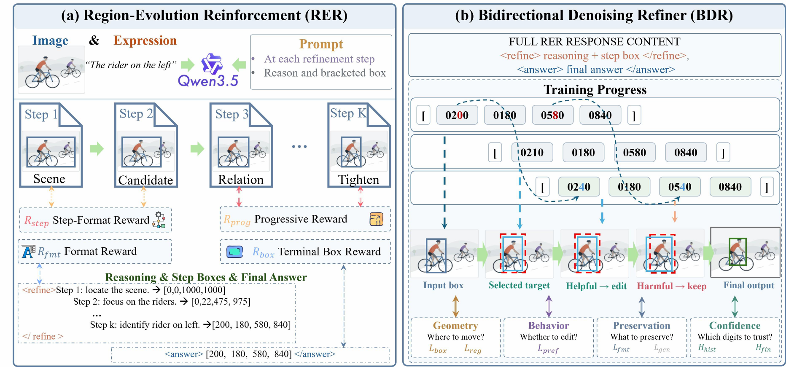
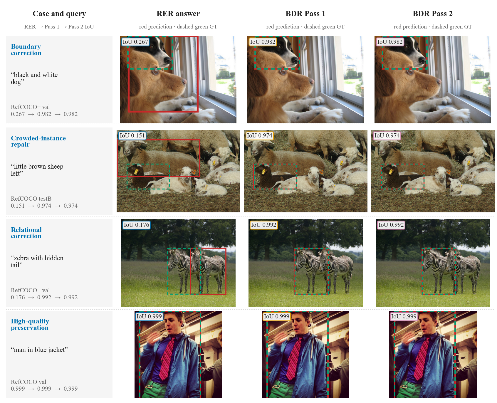
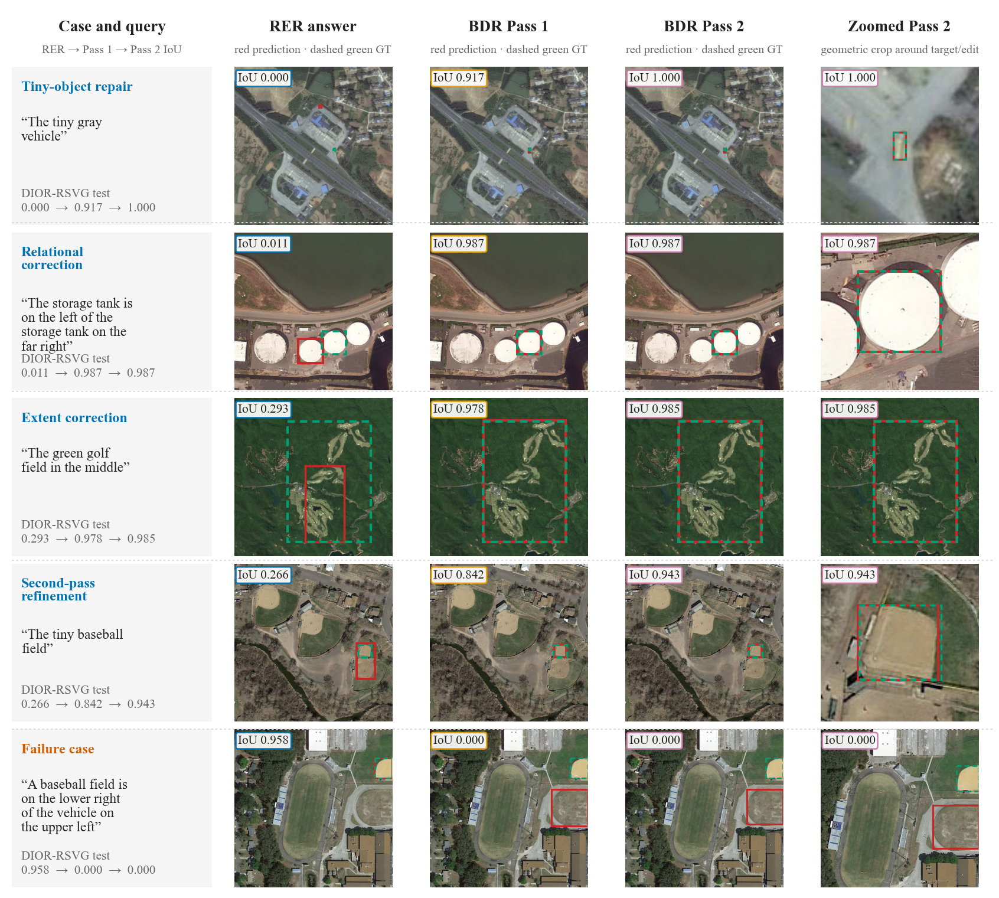
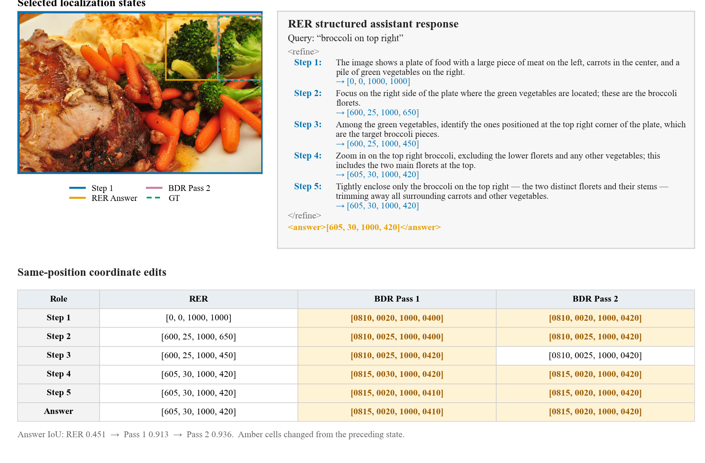
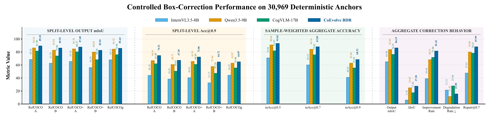

一句话: CoEvolve 将定位分为两个阶段:RER 构建显式的、由粗到细的空间轨迹,每一步都提交 一个候选区域;BDR 再对该状态的坐标 token 做同位置双向重建。9B 模型的定位精度与 241B 规模的模型相当。
交互演示
数据取自论文真实实例(Figure 10):查询 "broccoli on top right"、RER 的五步轨迹与两次 BDR 精修,坐标为论文的 [0, 1000] 归一化坐标系。
BDR 的训练方式:先人为破坏坐标,精修器学习在因果掩码移除、全局上下文可见的条件下做同位置重建。在 30,969 个受控锚点上,mIoU 从 58.80 提升到 86.19。
摘要
视觉定位旨在用边界框框出语言所描述的对象。大多数多模态定位模型把"目标识别、空间推理、 边界估计"压缩成一次终端预测:自由格式的推理虽然让思考在语言上显式,却不一定暴露可度量、可编辑的空间状态。 于是中间步骤的定位错误难以诊断和修正:选错区域、边界不准都会一路带到最终的框里;自回归式的重新生成 也缺乏对既有状态做同步修复的显式机制。
我们提出 CoEvolve,一个"构建‑编辑"式框架,把定位拆解为显式的状态构建与 状态编辑。区域演化强化(RER)把定位分析组织成由粗到细的"语义—空间"轨迹,每一步推理都提交一个 显式候选区域。双向去噪精修器(BDR)把这条轨迹当作可编辑状态:以固定响应为条件,通过同位置双向重建 同步产出新的定位候选;几何层与行为层监督教会 BDR 保留准确锚点、纠正不可靠状态、巩固可靠改进。
评测覆盖自然图像与遥感定位:CoEvolve 在 RefCOCO 系列测试划分上取得 85.72% mIoU, 经领域重训练后在 DIOR‑RSVG 上取得 76.23%;在受控框破坏实验中,BDR 将 mIoU 从 58.80% 提升至 86.19%。 状态来源对比进一步支持了"结构化状态构建 + 双向状态编辑"的互补性。
CoEvolve 如何工作

一次性的终端预测无法体现错误来自哪一步。CoEvolve 在每一步都写下空间状态,因此选错的区域 和偏松的边界在轨迹中清晰可见。BDR 可以直接修复已有状态,而不必重新生成整个响应,推理文本始终保持不变。
定性实例



实验结果
表 1 · RefCOCO 系列定位精度(Acc@0.5) CoEvolve 仅使用 RefCOCOg train 训练,不在目标评测集上微调;Overall 为全部八个划分的均值。‡ 骨干基线为本地复现。
| 模型 | 参数量 | RefCOCO | RefCOCO+ | RefCOCOg | Overall | |||||
|---|---|---|---|---|---|---|---|---|---|---|
| val | testA | testB | val | testA | testB | val | test | |||
| CoEvolve(本文) | 9B | 94.4 | 95.3 | 92.4 | 90.7 | 93.5 | 87.8 | 92.6 | 92.8 | 92.41 |
| InternVL3.5-241B-A28B | 241B | 94.1 | 96.3 | 91.5 | 91.6 | 94.6 | 86.9 | 92.0 | 92.1 | 92.39 |
| DeepSeek-VL2-Small | 16B | 93.9 | 95.3 | 91.3 | 89.4 | 92.9 | 84.8 | 92.6 | 92.6 | 91.60 |
| InternVL3-78B | 78B | 93.4 | 95.4 | 90.3 | 90.1 | 93.8 | 85.3 | 91.5 | 91.5 | 91.41 |
| Qwen3-VL-235B-A22B | 235B | 92.9 | 94.6 | 90.2 | 88.6 | 92.4 | 84.2 | 90.3 | 90.8 | 90.50 |
| CogVLM-Grounding-17B | 17B | 92.8 | 94.8 | 89.0 | 88.7 | 92.9 | 83.4 | 89.8 | 90.8 | 90.28 |
| Qwen3.5-9B(骨干)‡ | 9B | 91.5 | 93.8 | 89.5 | 87.7 | 91.3 | 82.9 | 89.7 | 89.6 | 89.48 |
表 2 · 五个测试划分上更严格 IoU 阈值的定位 单元格为 Acc@0.7 / Acc@0.9;聚合列按样本加权。‡ 本地复现;† 由论文报告的规模分组结果重建。
| 方法 | RefCOCO | RefCOCO+ | RefCOCOg test | mIoU | Acc@0.7 | Acc@0.9 | ||
|---|---|---|---|---|---|---|---|---|
| testA | testB | testA | testB | |||||
| CoEvolve(本文) | 92.7 / 74.2 | 87.1 / 67.8 | 90.7 / 73.1 | 82.3 / 64.7 | 86.9 / 65.2 | 85.72 | 87.94 | 68.64 |
| CogVLM-Grounding-17B ‡ | 90.6 / 69.2 | 83.0 / 61.3 | 88.6 / 67.9 | 77.3 / 57.7 | 85.5 / 64.7 | 83.60 | 85.31 | 64.45 |
| Qwen3-VL-8B ‡ | 88.8 / 66.3 | 81.1 / 58.4 | 86.4 / 64.9 | 74.8 / 54.0 | 83.0 / 61.7 | 82.39 | 83.09 | 61.35 |
| Qwen3.5-9B ‡ | 88.7 / 65.9 | 81.7 / 58.6 | 86.4 / 64.5 | 75.6 / 54.3 | 83.1 / 59.6 | 82.16 | 83.31 | 60.64 |
| Qwen3-VL-4B | 88.6 / – | 81.3 / – | 86.0 / – | 73.3 / – | 82.2 / – | 81.74 | 82.51 | 61.24 |
| InternVL3.5-8B ‡ | 85.9 / 63.0 | 77.5 / 55.0 | 83.9 / 61.6 | 70.6 / 50.0 | 79.3 / 58.6 | 79.33 | 79.68 | 58.02 |
| Hi-R1 † | – | – | – | – | – | 79.97 | 80.07 | 54.84 |

表 3 · 遥感定位 DIOR-RSVG RER 与 BDR 在 DIOR-RSVG 训练集上重训。† 我们复现的原生骨干,未做 DIOR-RSVG 适配。
| 方法 | Pr@0.5 | Pr@0.7 | Pr@0.9 | mIoU |
|---|---|---|---|---|
| CoEvolve(本文) | 86.20 | 76.16 | 43.45 | 76.23 |
| LQVG | 83.41 | 75.91 | 43.53 | 74.02 |
| GeoSearcher | 83.20 | 72.40 | – | 73.50 |
| LPVA | 82.27 | 72.25 | 39.55 | 72.35 |
| RSGround-R1 | 71.80 | 58.70 | – | 63.40 |
| InternVL3.5-8B | 64.90 | 50.50 | – | 56.90 |
| Qwen3.5-9B † | 55.85 | 43.15 | 18.81 | 51.83 |
| Qwen3.5-4B | 53.10 | 39.40 | – | 49.00 |
下游分割:用 CoEvolve 的框提示冻结 SAM3,在八个 RefCOCO 系列 划分上取得 78.19 Macro‑8 cIoU,未做掩码微调。
BibTeX
@article{sun2026coevolve,
title = {CoEvolve: Construct-to-Edit Visual Grounding with
Bidirectional State Refinement},
author = {Sun, Dongwei and Zhang, Yujie and Yao, Bowen and
Liu, Pei and Yao, Jing and Cao, Xiangyong},
journal = {arXiv preprint arXiv:2610.01710},
year = {2026}
}